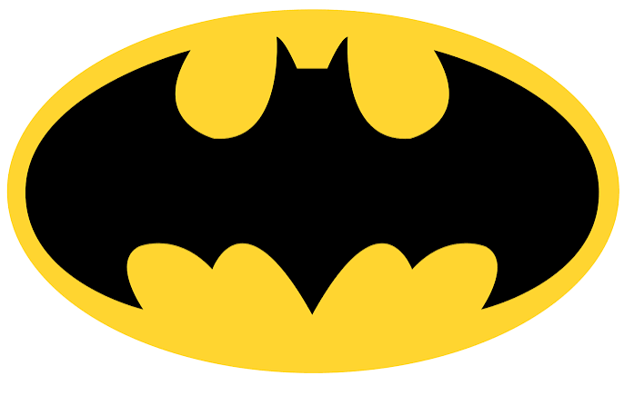

Selected Films

Brand 1 Watch ↗ Brand 2 Watch ↗.png) Brand 3 Watch ↗
Brand 3 Watch ↗
.jpg) Brand 4 Watch ↗
Brand 4 Watch ↗
.png) Brand 5 Watch ↗
Brand 5 Watch ↗
.png) Brand 6 Watch ↗
Brand 6 Watch ↗
.png) Brand 7 Watch ↗
Brand 7 Watch ↗
01 / 07
CREATED
TO BE
REMEMBERED
Selected Films

Brand 1 Watch ↗ Brand 2 Watch ↗
Brand 3 Watch ↗
Brand 4 Watch ↗
Brand 5 Watch ↗
Brand 6 Watch ↗
Brand 7 Watch ↗
01 / 07